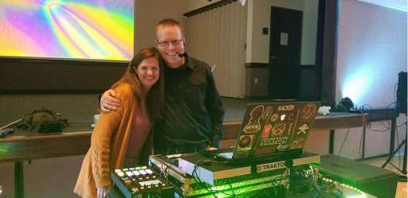

About
About SUPERTECHGUY
SUPERTECHGUY (LLC) is a leading provider of technical and audio-visual services in St. George, UT. Our highly trained and experienced staff offers a comprehensive range of services to meet our clients' technical and audio-visual needs. From computer repair and network installation to home theater installation and DJ/MC services for events, we have the expertise to provide exceptional solutions that exceed our clients' expectations.
Our Services
We offer a range of technical and audio-visual services, including:
- DJ & MC services for events
- Enterprise computer services
- Network installation
- Security solutions
- Troubleshooting
- Home theater installation
- Sound system setup
Our team is dedicated to providing our clients with the best value for their investment. We take pride in our work and strive to deliver exceptional quality services that are tailored to our clients' specific needs.
Our Mission
At SUPERTECHGUY, our mission is to deliver exceptional technical and audio-visual solutions that meet our clients' needs and exceed their expectations. We believe in providing personalized services that are customized to our clients' specific requirements. Our consulting and training services are designed to assist clients in making informed decisions about their technical and audio-visual needs, and our DJ & MC services are customizable to match our clients' taste and style.
Jeremy Cox | Owner

Jeremy Cox has over 20 years of experiance working in technology. Jeremy has provided training, acted as MC, and/or provided DJ services at dozens of events. Jeremy currently serves on the SAINTCON committee as the Co-Chair and on the UtahSAINT Board of Trustees. Jeremy is passionate about IT security. He also enjoys mixing music as DJ supertechguy and being the MC for events. In his spare time, you would find him up in the mountains enjoying time offline with his family. He is also a member of The Church of Jesus Christ of Latter Day Saints.